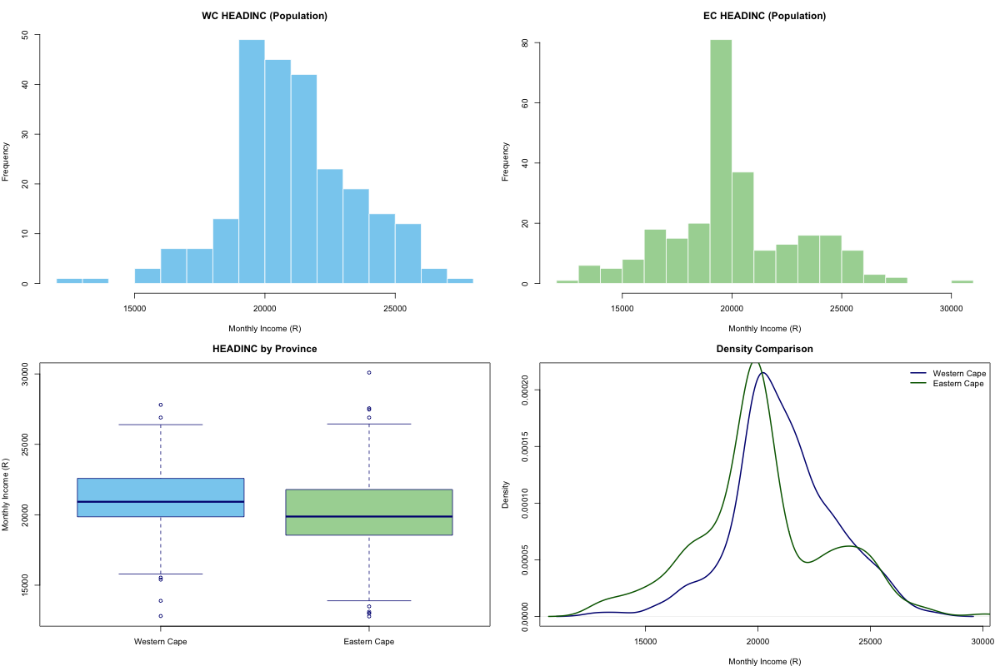
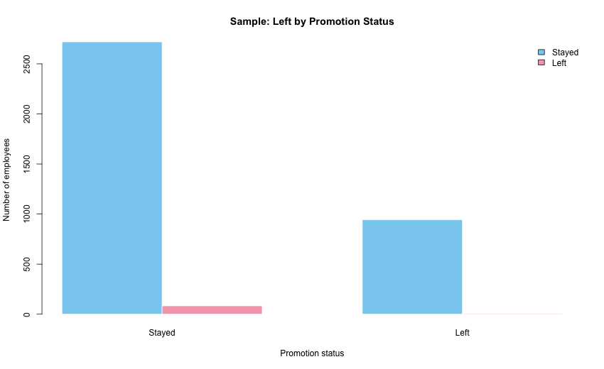

Statistical inference uses sample information to learn about an unknown population value. In this question the parameter of interest is the difference between the population mean mathematics scores of female and male students, written as μF - μM.
The estimator is the rule used to estimate that parameter from the sample, namely ̄X;F - ̄X;M. Once the sample is drawn, that estimator produces an observed numerical value called a statistic. Here the sample statistic is 63.92 - 69.21 = -5.29, so the sample suggests that female students scored about 5.29 marks lower on average than male students.
Hypotheses: H0: σM2 = σF2; H1: σM2 ≠ σF2.
| Test | F | df | p-value | Decision at 5% |
|---|---|---|---|---|
| F test for variances | 0.7913 | (115, 133) | 0.1978 | Fail to reject H0 |
Because the p-value is greater than 0.05, there is not enough evidence to conclude that the two population variances differ. For the mean comparison, it is therefore reasonable to use the equal-variance two-sample t test.
Hypotheses: H0: μF - μM = 0; H1: μF - μM ≠ 0.
| Test | t | df | p-value | Decision at 5% |
|---|---|---|---|---|
| Pooled two-sample t test | -2.8472 | 248 | 0.0048 | Reject H0 |
The p-value is below 0.05, so there is statistically significant evidence that the mean mathematics scores are different for male and female students. In this sample, male students scored higher on average (69.21) than female students (63.92).
The 95% confidence interval for μF - μM is (-8.95, -1.63).
The histograms, boxplot and density plot all show that the Eastern Cape income distribution is more spread out than the Western Cape distribution. The EC box is wider, the whiskers are longer, and the histogram stretches further into both tails.

| Measure | Western Cape | Eastern Cape | Interpretation |
|---|---|---|---|
| Variance | 5 355 263.07 | 8 709 900.71 | EC variance is larger |
| Standard deviation | 2 314.14 | 2 951.25 | EC incomes vary more around the mean |
| IQR | 2 628.21 | 3 162.58 | EC middle 50% is more spread out |
| Range | 14 994.05 | 17 311.99 | EC has the wider overall spread |
Numerically, the EC population variance is about 1.63 times the WC population variance (8 709 900.71 / 5 355 263.07).
Both the graphical and numerical evidence lead to the same conclusion: the variance of HEADINC is higher in the Eastern Cape than in the Western Cape. The EC income distribution is therefore more dispersed, while WC incomes are more tightly clustered around their mean.
Using the Assignment 1 sample and a Welch interval, the 95% confidence interval for μWC - μEC is (-939.20, 2 182.82).
Hypotheses: H0: μWC ≤ μEC; H1: μWC > μEC.
| Test | t | df | p-value | Decision |
|---|---|---|---|---|
| One-sided Welch t test | 0.8029 | 43.88 | 0.2132 | Fail to reject H0 |
The sample mean for WC is higher than EC by about R621.81, but the p-value is far above 0.05. There is therefore not enough inferential evidence to conclude that the average income in the Western Cape is higher than the average income in the Eastern Cape.
set.seed(4346549), giving 2 802 employees who stayed and 948 employees who left.Hypotheses: H0: σStayed2 = σLeft2; H1: σStayed2 ≠ σLeft2.
| Group | n | Mean | Variance | Std Dev |
|---|---|---|---|---|
| Stayed | 11 428 | 3.3800 | 2.4409 | 1.5623 |
| Left | 3 571 | 3.8765 | 0.9559 | 0.9777 |
The F test gave F = 2.5536 with p-value < 2.2 × 10-16. This p-value is essentially zero, meaning that such a large variance difference would be extremely unlikely if the population variances were truly equal.
Hypotheses: H0: μStayed = μLeft; H1: μStayed ≠ μLeft.
| Test | t | df | p-value | Decision at 1% |
|---|---|---|---|---|
| Welch two-sample t test | -10.342 | 2680.7 | < 2.2 × 10-16 | Reject H0 |
The sample mean time spent at the company is 3.4029 years for employees who stayed and 3.8502 years for employees who left. The 99% confidence interval for μStayed - μLeft is (-0.5588, -0.3358).
Hypotheses: H0: μStayed = μLeft; H1: not all group means are equal.
| Source | Df | Sum Sq | Mean Sq | F | p-value |
|---|---|---|---|---|---|
| left_group | 1 | 141.71 | 141.71 | 67.83 | 2.44 × 10-16 |
| Residuals | 3748 | 7831.00 | 2.09 | - | - |
The ANOVA p-value is also far below 0.01, so it reaches the same substantive conclusion as the t test: the average years spent with the company differ between employees who stayed and those who left.
Not fully as the primary result. The sample is unbalanced (2 802 stayed versus 948 left) and Question 1.1 showed clear inequality of variances. Those conditions are not ideal for the standard aov() procedure, so the Welch t test in Question 1.2 is the more defensible inferential result.
That said, because there are only two groups and the p-value is extremely small in both procedures, the ANOVA result still supports the same practical conclusion. The conclusion is robust, but the Welch test is the one that should be preferred.
| Left status | Not promoted | Promoted | Total |
|---|---|---|---|
| Stayed | 11 128 | 300 | 11 428 |
| Left | 3 552 | 19 | 3 571 |
| Total | 14 680 | 319 | 14 999 |
The chi-square expected counts for the four cells are 11 184.95, 243.05, 3 495.05 and 75.95. Since all expected counts are well above 5, the group-size assumption for the chi-square test is met.
| Left status | Not promoted | Promoted | Total |
|---|---|---|---|
| Stayed | 2 719 | 83 | 2 802 |
| Left | 943 | 5 | 948 |
| Total | 3 662 | 88 | 3 750 |

Hypotheses: H0: leaving the company is independent of promotion status; H1: leaving the company is dependent on promotion status.
| Test | χ2 | df | p-value | Decision |
|---|---|---|---|---|
| Pearson chi-square (Yates corrected) | 17.277 | 1 | 0.0000323 | Reject H0 |
The p-value is far below 0.05, so there is strong evidence that leaving the company depends on whether an employee was promoted in the last 5 years. In the sample, 25.75% of non-promoted employees left (943/3 662), compared with only 5.68% of promoted employees (5/88).